Para wedding planners y organizadores de eventos: la planificación por meses, el presupuesto por proveedor, tus honorarios y comisiones, y los cobros de cada evento.
Todo es por módulos: enciendes solo lo que tu negocio necesita.
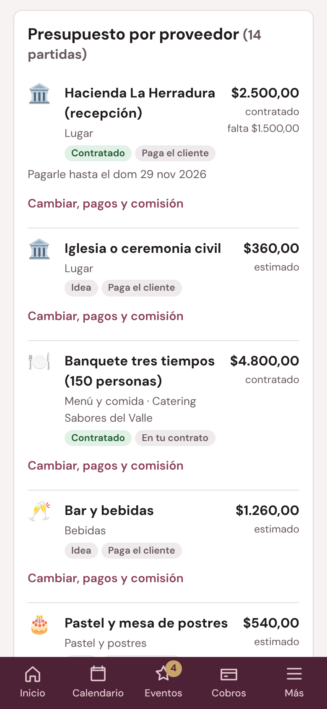
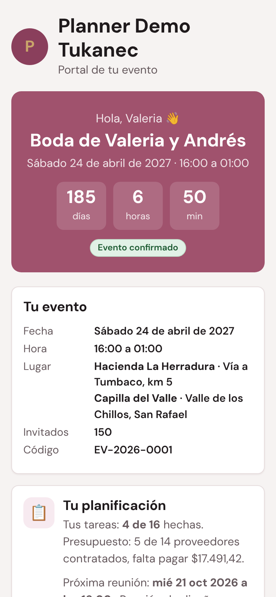
Capturas reales del negocio de ejemplo Planner Demo Tukanec. tuplanner.tukanec.com WhatsApp 099 640 8397 · info@tukansoftware.com · tukansoftware.com
Contenido
Cómo leer este manual. Cada capítulo es una parte de TuPlanner. Arriba de cada uno dice si es de la base (lo tienen todos los negocios) o de un módulo (se enciende en Mi plan). Si un módulo no está en tu plan, su pantalla dice «Este módulo no está en tu plan» y te deja pedirlo.
TuPlanner es el sistema para wedding planners y organizadores de eventos de Ecuador: bodas, quince años, pedidas de mano, baby showers, graduaciones, eventos corporativos y más. Está pensado para quien no tiene local propio: trabajas en las quintas, haciendas e iglesias de otros y llevas todo el evento, desde la primera consulta hasta el día de la fiesta.
Funciona en el celular, la tablet y la computadora, sin instalar nada: entras a tuplanner.tukanec.com con tu correo y tu contraseña.
La base (la tienen todos)
Calendario sin doble reserva: un lugar separado no se puede separar dos veces a la misma hora (lo impide el sistema). También ves los próximos sábados libres.
Eventos con sus estados (consulta, cotizado, separado, confirmado, realizado), seguimiento, tareas y lista de espera.
Clientes con su historial · Lugares (quintas, haciendas, iglesias) y catálogo de servicios con precios.
Cotizaciones con IVA, descuento y versiones, en PDF con QR y con un enlace para que el cliente la acepte.
Plan de pagos, cuotas, recibos en PDF y comprobantes · Mensajes de WhatsApp del día listos para enviar.
Página pública con «¿Está libre tu fecha?» y formulario de consulta · reportes de ventas, cobros, por cobrar y ocupación.
Usuarios con roles y avisos en la campana · se instala en el celular como una app.
Los módulos (se encienden o se apagan)
Módulo
Para qué sirve
🗓️ Planificación
Lista de tareas por meses para ti y para tu cliente, con «Tu planificación» en su portal
💰 Presupuesto por proveedor
Partidas por proveedor, pagos directos del cliente, tus honorarios y el dinero del evento (necesita Planificación)
🤝 Comisiones de proveedores
Lo que cada proveedor te debe de comisión y el recordatorio por WhatsApp (necesita Presupuesto)
💡 Ideas e inspiración
Tablero de fotos tuyo y de tu cliente, temática y paleta de colores
🎁 Paquetes y simulador
Paquetes armados que cargan toda la cotización en un toque
✍️ Contratos con firma
Contrato que el cliente firma con el dedo, con QR de verificación y anexos por extras
📱 Portal del cliente
El enlace del cliente, sin claves: su evento, pagos, contrato y comprobantes
💳 Cobros en línea (Payphone)
El cliente paga sus cuotas con tarjeta desde su portal (necesita el portal)
📝 Formulario, extras y encuesta
Formulario del evento, extras pedidos en línea y encuesta de satisfacción (necesita el portal)
⏱️ Día del evento
Cronograma minuto a minuto con modo en vivo, personal y hoja del evento en PDF
🎟️ Invitados con QR
Invitación digital, confirmación, mesas y control de ingreso con QR
🗺️ Plano del salón · 🪑 Mobiliario y menaje
Plano de mesas de cada lugar · tu decoración y menaje reservados por evento
🎥 Boda en vivo
Transmisión con el botón «Ver en vivo» en el portal y la invitación (necesita Día del evento)
🚚 Proveedores y compras · 🔗 Portal del proveedor · ⭐ Incidencias
Ficha del proveedor, órdenes de compra, facturas, por pagar, su portal y su puntaje
🎯 Metas y reportes avanzados
Metas de ventas, embudo, ganancia por evento y comisiones de vendedores
📲 Avisos por Telegram · 📤 Exportar
Avisos al celular del equipo · descargas para Excel y Google Calendar
PlanesEsencial = la base. Planner = la base + lo del organizador (planificación, presupuesto, comisiones, ideas), paquetes, contratos, portal del cliente con cobros en línea, formulario y encuesta, proveedores e incidencias, metas, Telegram y exportar. Agencia = todos los módulos y usuarios sin límite. A cualquier plan se le puede sumar o quitar un módulo. El valor de tu plan te lo cotiza Tukán por WhatsApp según lo que necesita tu negocio. Apagar un módulo no borra nada: sus pantallas se esconden y, al volver a encenderlo, todo sigue como estaba.
2 Entrar y la pantalla de Inicio
Base
Abre tuplanner.tukanec.com en el navegador del celular o de la computadora.
Escribe tu Correo y tu Contraseña y toca Entrar.
Si entraste con una contraseña temporal, el Inicio te lo recuerda: cámbiala en Mi cuenta.
En la computadora el menú está a la izquierda. En el celular tienes abajo Inicio, Calendario, Eventos, Cobros y Más, donde está todo lo demás (clientes, seguimiento, mensajes, catálogo, lugares, reportes, configuración, usuarios, Mi plan y Mi cuenta).
ConsejoInstala TuPlanner como app: en el Inicio aparece «Instala TuPlanner en tu celular» con el botón Instalar (o en Chrome, menú ⋮ → «Agregar a la pantalla principal»). Se abre con su ícono, a pantalla completa.
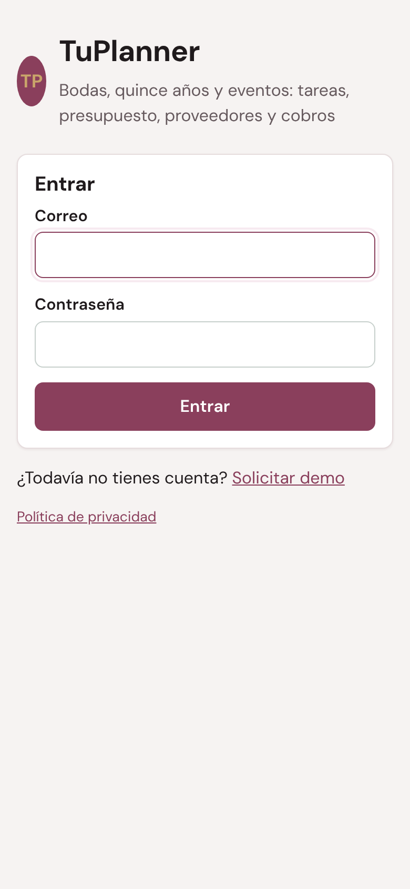
La pantalla para entrar.
El Inicio
Arriba tienes los accesos Nuevo evento, Calendario y Cobros. Después: los comprobantes que subieron tus clientes, tus cifras (eventos del mes, próximos 30 días, vencido por cobrar, comprobantes por revisar y consultas nuevas), los Próximos 7 días, los Avisos sin leer, los Seguimientos de hoy, las Tareas por vencer, las Cuotas vencidas o por vencer y lo que está Para atender.
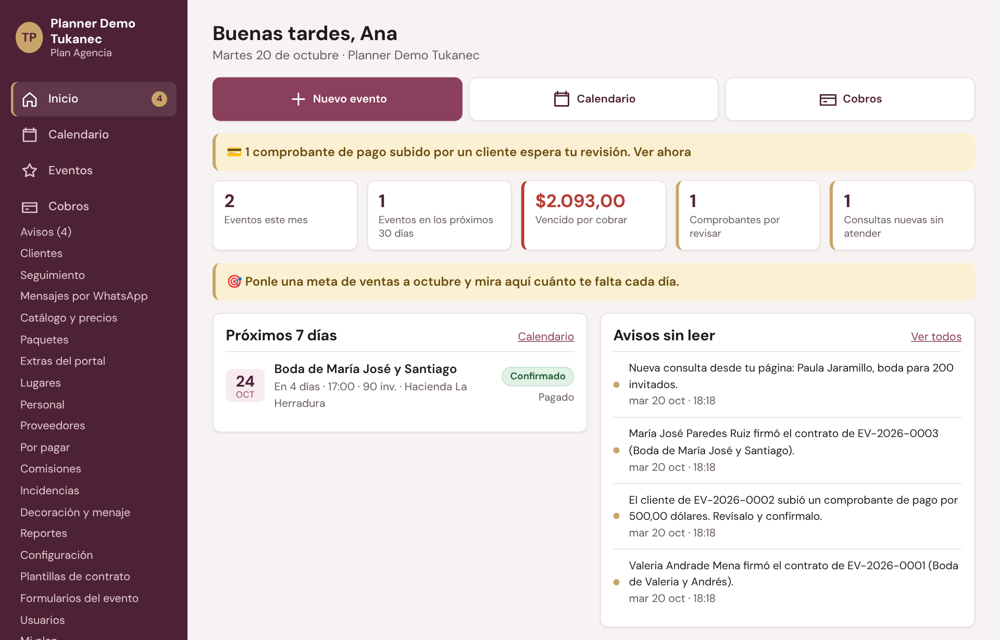
El Inicio en la computadora: un comprobante por revisar, el evento de esta semana y los avisos.
Primeros pasos
Cuando tu cuenta es nueva, el Inicio muestra la guía Primeros pasos, que se va tachando sola:
Completa los datos de tu negocio: dirección, RUC y WhatsApp (salen en las cotizaciones y contratos).
Sube tu logo: sale en la cotización, el contrato y tu página pública.
Revisa tus lugares y precios: vienen ejemplos para que los cambies por los tuyos. Cuando termines, toca Ya lo hice.
Crea tu primer evento: anota una consulta real y cotízala.
Cada paso tiene su botón Hacerlo. Si ya sabes usarlo, toca Ya sé usarlo, ocultar (se puede volver a mostrar desde Configuración → Más).
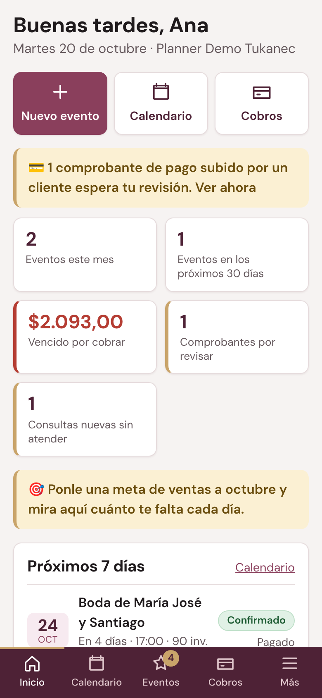
El Inicio en el celular.
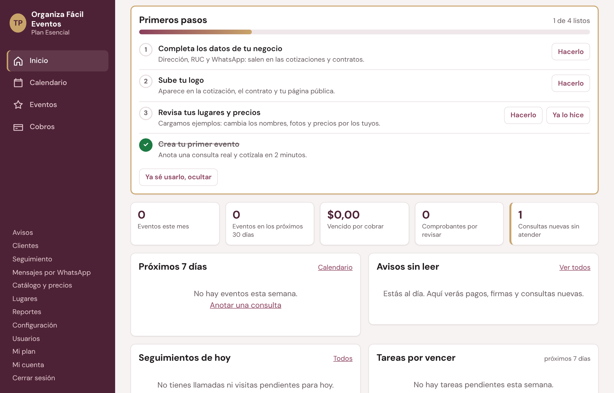
La guía «Primeros pasos» de una cuenta nueva.
3 Tu equipo y sus permisos
Base
Cada persona de tu equipo entra con su propio correo y su contraseña. Lo que ve en el menú depende de su rol y de los módulos que tienes.
Rol
Qué puede hacer
Dueño
Todo, incluida la configuración, los usuarios y el plan.
Vendedor
Atiende consultas, cotiza, hace contratos y registra cobros.
Coordinador
Ve los eventos y organiza el día: personal, proveedores, invitados y mobiliario. Ve y marca las tareas y las ideas. No ve dinero (no tiene Cobros, Cotización, Contrato ni Pagos).
Solo consulta
Ve todo (eventos, cobros, reportes) pero no puede cambiar nada. Ideal para el contador o un socio.
Agregar a alguien
Ve a Más → Usuarios (solo el dueño).
En Agregar a alguien escribe el nombre, el correo y el celular, y elige qué va a hacer: Vendedor, Coordinador o Solo consulta.
Toca Crear usuario. El sistema crea una contraseña temporal y la muestra solo esa vez: mándala con Enviar por WhatsApp o Copiar el mensaje. Al entrar, la persona la cambia.
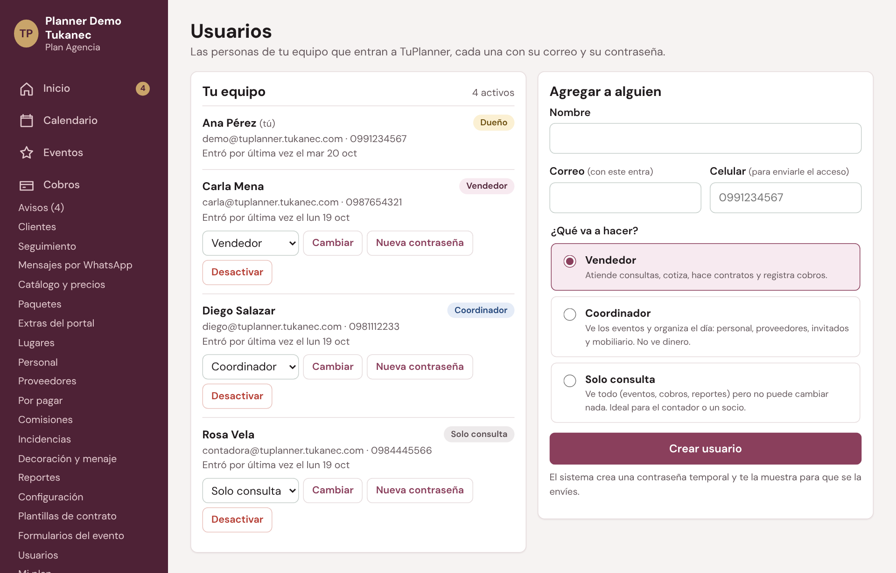
Usuarios: el dueño, una vendedora, un coordinador y la contadora con «Solo consulta».
Cambiar: le cambias el rol. Nueva contraseña: si la olvidó (la anterior deja de funcionar).
Desactivar: ya no puede entrar, pero lo que hizo se guarda. Puedes volver a Activarlo.
OjoCada plan permite un número de usuarios activos. Si llegaste al límite, desactiva a quien ya no lo use o pide más en Mi plan (el plan Agencia no tiene límite de usuarios).
4 Configuración: tu negocio y tus reglas
Base · solo el dueño
En Más → Configuración tienes las pestañas Negocio, Reglas, Cobros en línea, Página pública, Tareas, Google Calendar (con el módulo Exportar) y Más.
Negocio
Nombre comercial, razón social, RUC, teléfono, WhatsApp del negocio, correo, ciudad, dirección, enlace de Google Maps, Instagram, Facebook, enlace para dejar reseña en Google, la descripción para tu página pública y el color de tu marca. Toca Guardar datos del negocio. Tu logo se sube con Guardar logo.
Reglas
Son las reglas con las que TuPlanner arma tus cotizaciones, tus planes de pago y la organización de cada evento. Los cambios valen para lo nuevo; lo que ya hiciste no cambia.
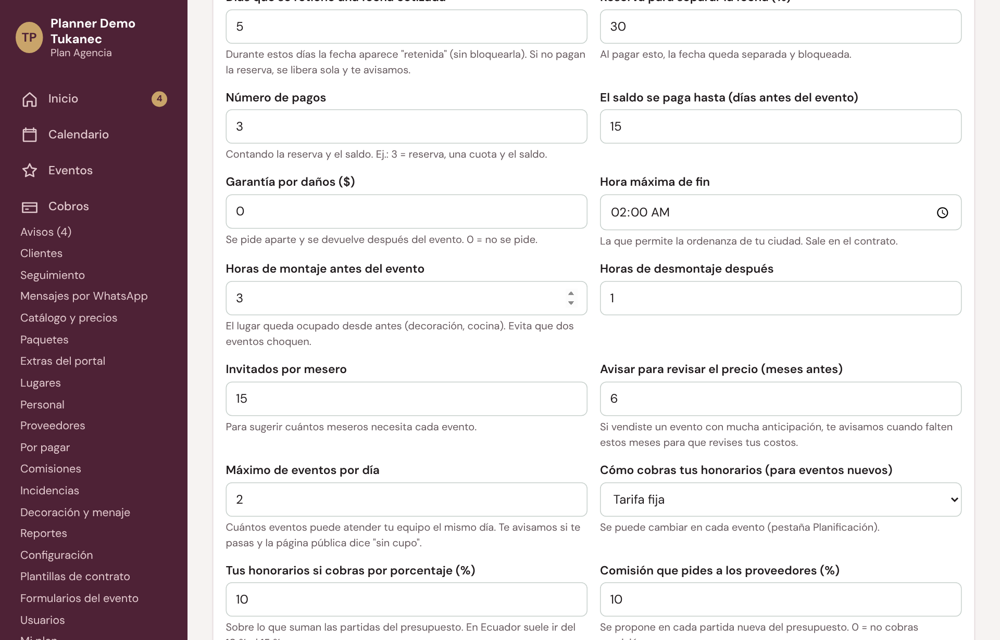
Reglas: reserva, número de pagos, máximo de eventos por día, honorarios y comisión.
Regla
Para qué sirve
IVA · Días que vale una cotización
El IVA de tus cotizaciones y hasta cuándo vale cada una.
Días que se retiene una fecha cotizada
La fecha queda «retenida» (sin bloquearla) mientras el cliente decide.
Reserva para separar la fecha (%) · Número de pagos · El saldo se paga hasta
Con esto se arma solo el plan de pagos de cada evento.
Máximo de eventos por día
Cuántos eventos puede atender tu equipo el mismo día. Te avisamos si te pasas y tu página pública dice «quedan pocos cupos» o «sin cupo».
Cómo cobras tus honorarios · Tus honorarios si cobras por porcentaje (%)
Tarifa fija o porcentaje del presupuesto, para los eventos nuevos (cada evento se puede cambiar).
Comisión que pides a los proveedores (%)
Se propone en cada partida nueva del presupuesto. 0 = no cobras comisión.
Condiciones que salen en la cotización
Tu letra pequeña: validez, reserva, saldo, número final de invitados.
También están la garantía por daños, la hora máxima de fin, las horas de montaje y desmontaje, invitados por mesero, el aviso para revisar el precio y la comisión del vendedor. Toca Guardar reglas.
Cobros en línea y página pública
Cobros en línea: tus Datos para transferencia y tu Celular de DeUna (salen en el portal del cliente). Con el módulo Cobros en línea (Payphone), también el token de Payphone para cobrar con tarjeta.
Página pública: el enlace de tu página para Instagram y WhatsApp (Copiar, Ver mi página, Compartir por WhatsApp) y su código QR para imprimir.
5 Lugares, catálogo y lista de tareas
Base
Lugares
En Más → Lugares anotas las quintas, haciendas, iglesias y terrazas donde trabajas. Vienen dos de ejemplo: tócalos en Editar para poner los tuyos, o crea otro con Nuevo lugar. De cada uno: nombre, Tipo (recepción, ceremonia o ambos), capacidad sentados y de pie, alquiler (opcional), Dirección, Enlace de Google Maps, contacto del lugar con su celular, descripción, color en el calendario y foto para tu página pública.
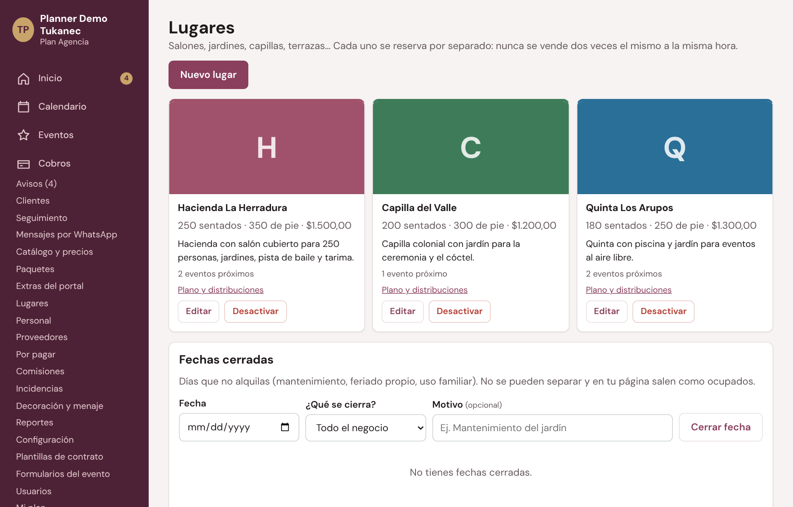
Los lugares del negocio de ejemplo y las fechas cerradas.
En Fechas cerradas marcas los días que no trabajas (feriado, vacaciones): ese día no se puede separar y tu página pública lo muestra ocupado.
Catálogo y precios
En Más → Catálogo y precios está todo lo que cotizas, por categoría: tus servicios de Organización (honorarios) (organización integral, coordinación del día, asesoría por horas) y lo que revendes (menú, bebidas, decoración, música, foto y video, flores…). De cada producto: precio al cliente sin IVA, lo que te cuesta (solo lo ves tú), cómo se cobra (por evento, por persona, por unidad o por hora) y si cobra IVA.
+ Agregar producto, Editar y Desactivar (ya no sale para cotizar; se puede volver a activar).
Subir precios en bloque: por ejemplo +5 % a todo el menú a inicio de año.
Con el módulo Paquetes y simulador, en Paquetes armas combos (ej. «Organización integral de boda») que cargan toda la cotización en un toque, y el botón ¿Cuánto sale? calcula el precio por número de invitados.
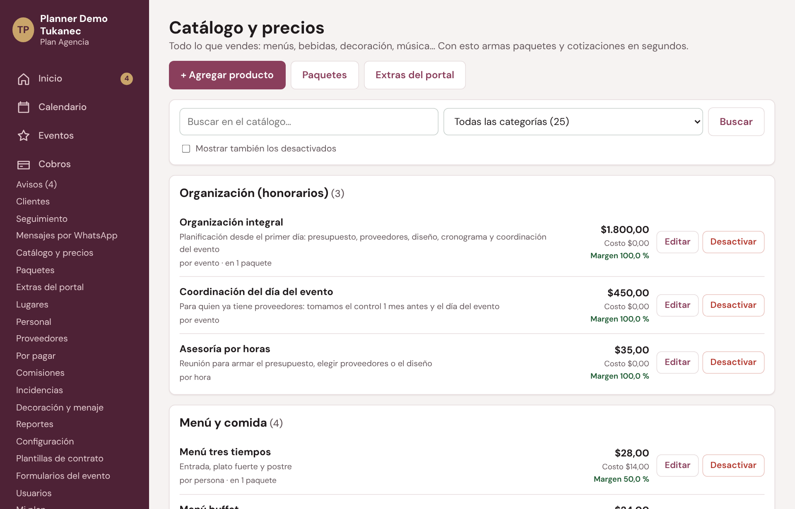
Catálogo y precios: tus honorarios con su margen.
La lista de tareas de cada evento
En Configuración → Tareas está la lista que se copia sola a cada evento nuevo, con su fecha contada desde el día del evento. Ya viene una lista típica de boda, otra de quince años y una para los demás eventos.
En Agregar una tarea escribe la tarea (ej. «Prueba de peinado y maquillaje»).
Elige Para qué eventos y ¿Quién la hace?: el Organizador (tú) o el Cliente (la marca en su portal).
Escribe los Días antes del evento (0 = el mismo día; un número negativo = después del evento, ej. −8 para devolver la garantía) y toca Agregar tarea.
Cambiar la plantillaCambiar aquí no toca los eventos que ya creaste. En cada evento puedes agregar, cambiar o borrar tareas (capítulo 7).
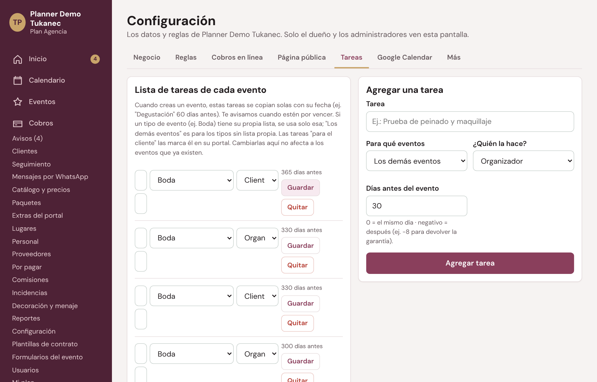
La plantilla de tareas: para quién es cada una y cuántos días antes.
6 Calendario y eventos
Base
El calendario
En Calendario ves el mes con tus eventos y su estado. Toca un día para ver qué lugares están libres y crear ahí un Nuevo evento. Puedes filtrar por lugar y ver los Próximos sábados.
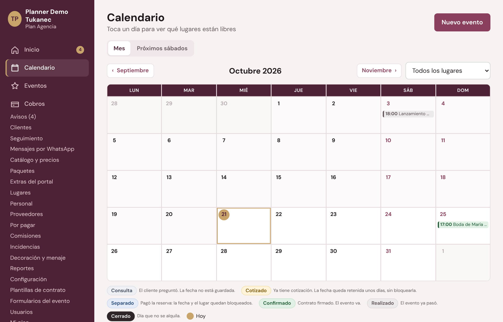
El calendario de octubre con el lanzamiento corporativo y la boda del sábado.
Los estados de un evento
Estado
Qué quiere decir
Consulta
El cliente preguntó. La fecha no está guardada.
Cotizado
Ya tiene cotización. La fecha queda retenida unos días, sin bloquearla.
Separado
Pagó la reserva: la fecha y el lugar quedan bloqueados. Pasa solo cuando registras el pago de la reserva.
Confirmado
Contrato firmado. El evento va.
Realizado
El evento ya pasó.
Perdido · Cancelado
No contrató · se canceló después de separar. Se pide el motivo (sirve para saber por qué se pierden ventas).
En Eventos los ves en Lista o en el Tablero de ventas (una columna por estado), con buscador y filtros por tipo, vendedor y fechas.
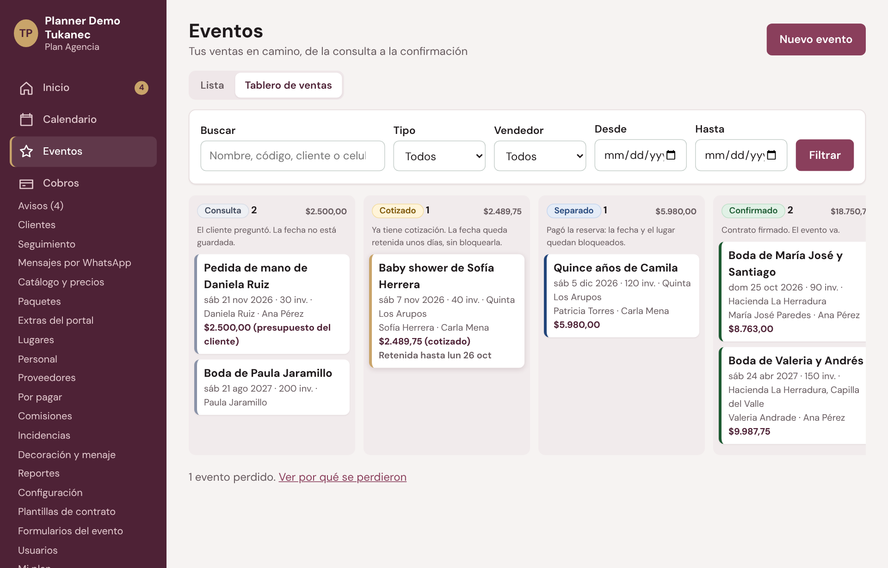
El tablero de ventas: de la consulta a la confirmación.
Crear un evento
Toca Nuevo evento (en el Inicio, el Calendario o Eventos).
1 Cliente: Cliente nuevo (nombre, celular para WhatsApp, cédula o RUC y correo opcionales) o Ya está registrado (búscalo). Anota ¿Cómo nos conoció?
2 Evento: ¿Qué celebran?, nombre (opcional), fecha, hora de inicio y fin, invitados y montaje. Marca los lugares; si todavía no lo eligen, déjalos sin marcar y queda «Lugar por definir».
3 Venta: el Presupuesto del cliente (lo que piensa gastar), el vendedor y notas. Toca Crear evento.
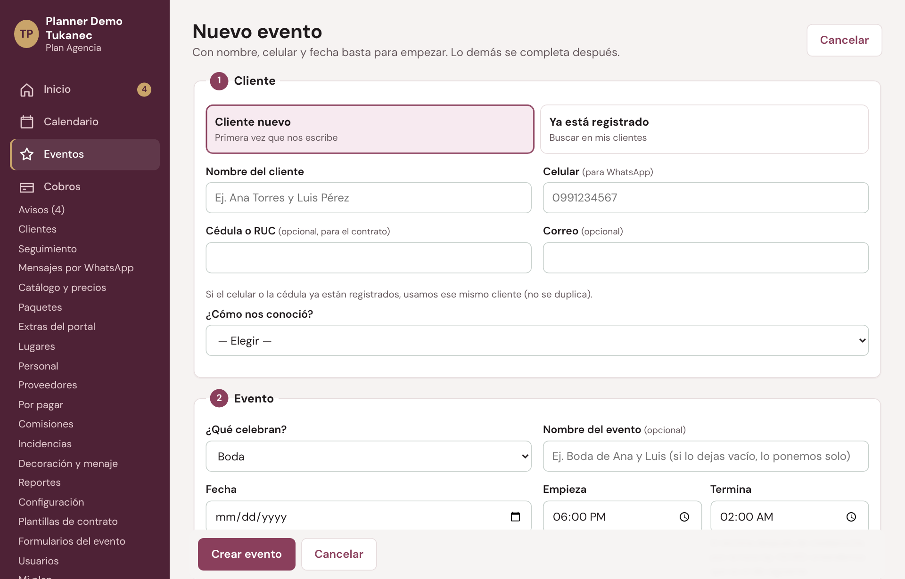
Nuevo evento: con nombre, celular y fecha basta para empezar.
Sin choquesSi el lugar ya está separado a esa hora, TuPlanner te avisa. Puedes cambiar la fecha, la hora o el lugar, o guardarlo igual como consulta en lista de espera (no se podrá separar mientras el otro evento tenga la fecha).
El resumen del evento
Cada evento tiene sus pestañas: Resumen, Planificación, Cotización, Contrato, Pagos, y las de los módulos que tengas (Día del evento, Invitados, Formulario y extras, Plano, Ideas). En el Resumen ves el Estado con sus botones (ej. Separar la fecha, Confirmar evento, Marcar como perdido), el dinero, los datos, el cliente con Escribir por WhatsApp, la cotización y el contrato, el enlace del portal, el coordinador del día, el seguimiento, Copiar a otra fecha y el historial de cambios.
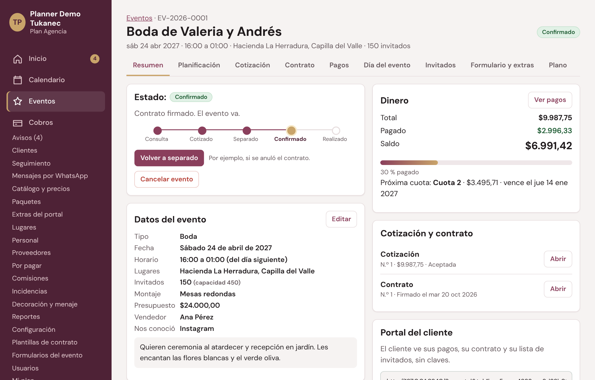
El resumen de la boda de ejemplo, ya confirmada.
Consultas desde tu página pública
Tu negocio tiene su propia página (Configuración → Página pública) con tus lugares, lo que celebras y el botón Consulta tu fecha. El visitante revisa si su fecha está libre (¿Está libre tu fecha?) y llena Pide información.
Al tocar Enviar consulta, el evento entra solo a TuPlanner como Consulta, te llega un aviso a la campana y aparece en Consultas nuevas sin atender en el Inicio y en Seguimiento.
ConsejoPon el enlace de tu página en la biografía de Instagram y en tu estado de WhatsApp. El código QR de Configuración sirve para ferias de bodas.
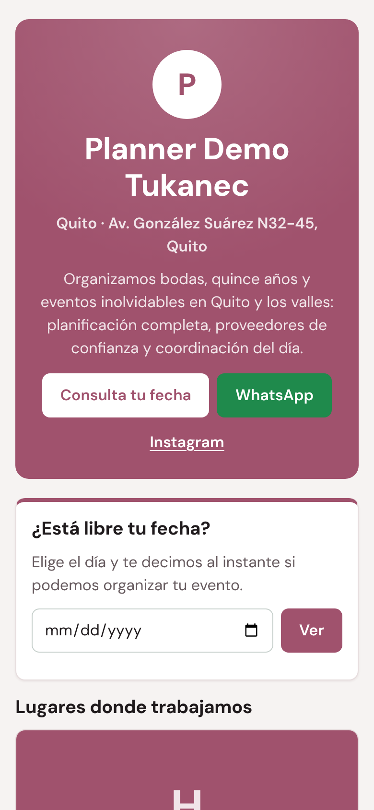
La página pública en el celular del cliente.
7 Planificación: la lista de tareas
Módulo «Planificación»
En la pestaña Planificación de cada evento está la Lista de tareas, agrupada por meses: «6 meses antes», «3 meses antes»… «El último mes» y «Después del evento». Arriba ves cuántas están hechas, cuántas están atrasadas (en rojo) y cuántas hizo el cliente.
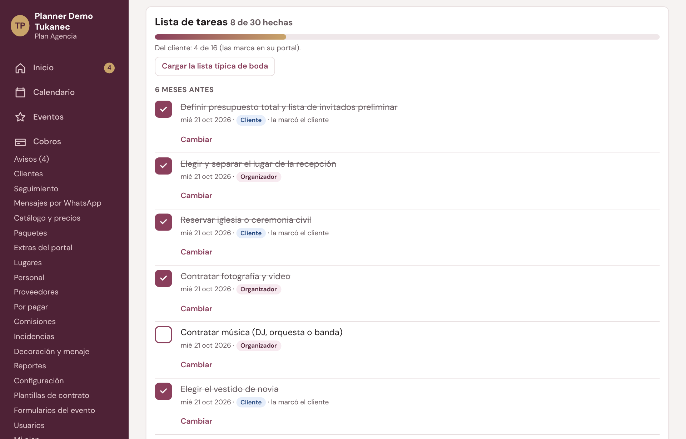
Lista de tareas de la boda: unas del Organizador y otras del Cliente.
Al crear el evento se copia sola la lista de tu plantilla. Si la borraste, toca Cargar la lista típica de boda (o del tipo de evento): no repite las que ya están. Si el evento es pronto, las tareas que ya debían estar hechas quedan para hoy.
Toca el cuadro de una tarea para marcarla hecha (o pendiente otra vez).
En Cambiar editas la tarea, la fecha (Hasta), Para quién es y una Nota; o la quitas con Borrar tarea.
Abajo, en Nueva tarea, agregas las tuyas (ej. «Prueba de menú con los novios») y tocas Agregar.
Tareas del clienteLas tareas «Cliente» le salen a tu cliente en su portal, en Tu planificación, y él las marca cuando las termina. Tú ves «la marcó el cliente». Las del organizador solo las marca tu equipo.
Sin el móduloLas tareas del evento también salen en el Resumen (base), sin la agrupación por meses ni las tareas del cliente en su portal.
Equipo y díaSi ese día tu equipo ya tiene otro evento, la Planificación te avisa arriba, y en rojo si llegaste a tu máximo de eventos por día.
8 Presupuesto por proveedor
Módulo «Presupuesto por proveedor» (necesita Planificación)
Una partida es cada cosa que hay que contratar: el lugar, el banquete, las fotos, las flores, el vestido… De cada una anotas el proveedor, cuánto se estima, cuánto se contrató, en qué va y quién le paga.
Arrancar en un clic
En la Planificación del evento, escribe el Presupuesto total del cliente (ej. 18.000).
Toca Repartir con los porcentajes típicos: TuPlanner arma las partidas típicas de una boda, unos quince años u otro evento en Ecuador (lugar, banquete, foto y video, decoración…) con su estimado.
Después cambias lo que quieras, o agregas más con + Agregar partida.
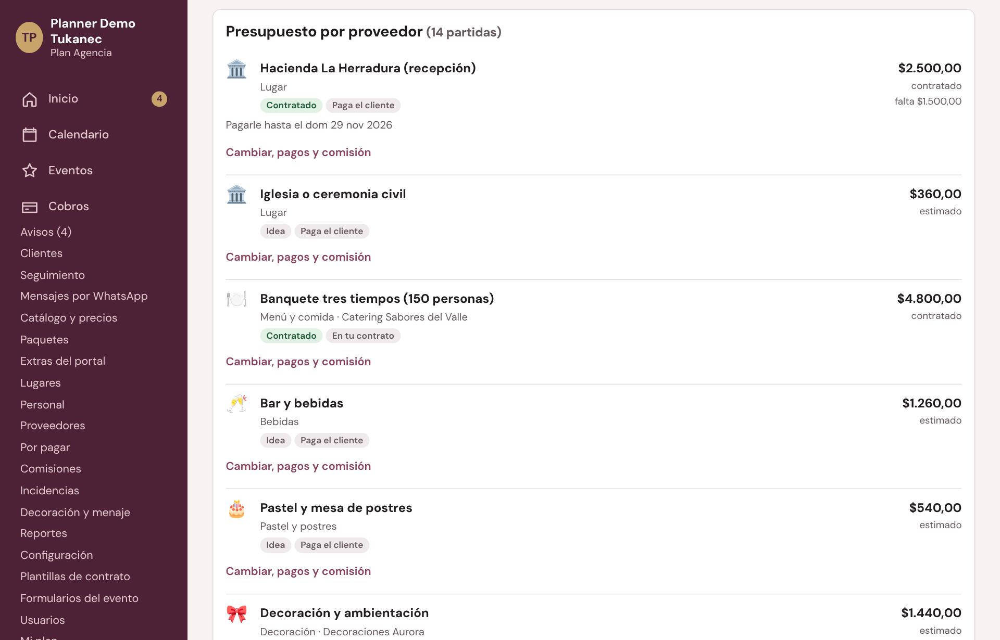
Presupuesto por proveedor: cada partida con su estado, quién paga y cuánto falta.
Quién le paga al proveedor
Opción
Cómo funciona
El cliente le paga directo
El cliente contrata y paga al proveedor. Anotas sus pagos (tú o el cliente desde su portal) y TuPlanner te dice cuánto falta y hasta cuándo pagarle.
Va en nuestro contrato
Tú lo revendes: lo cobras en tu cotización y le pagas al proveedor (con el módulo Proveedores y compras, en Compras). El cliente no ve ese costo.
Cada partida tiene un estado: Idea, Pidiendo precios, Contratado o Descartado. Si desmarcas «El cliente la ve en su portal», la partida sale como Oculta al cliente.
Cambiar una partida y anotar pagos
Toca Cambiar, pagos y comisión en la partida.
Cambia la categoría, ¿Qué es?, el proveedor (de tu lista o escrito), el Estado, ¿Quién le paga al proveedor?, el Estimado y el Precio contratado cuando ya cerraste. Pon Pagarle hasta si hay fecha.
Si el cliente paga directo, en Pagos del cliente a este proveedor escribe el monto, la fecha y la forma, y toca Anotar pago.
Una partida sin pagos ni comisión cobrada se puede quitar con Borrar esta partida.
El presupuesto en el celular.
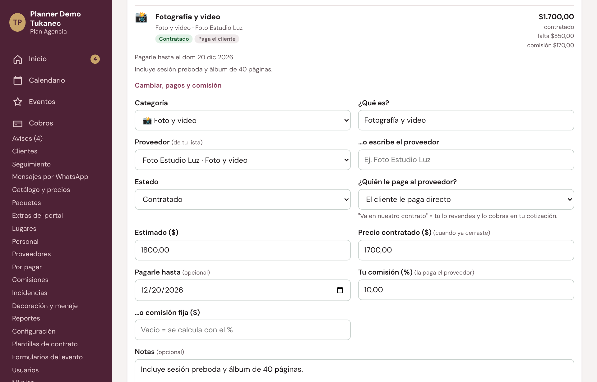
La partida de fotografía y video abierta: proveedor, estado, quién paga, precio y comisión.
El dinero del evento
Arriba de la Planificación ves todo el dinero del evento en un solo lugar:
Presupuesto del cliente, Costo total del evento y si Queda del presupuesto o Se pasa del presupuesto.
Con tu negocio (contrato): lo que el cliente te paga a ti, lo pagado y lo que falta (aparece cuando el cliente acepta la cotización).
Directo a proveedores: lo que el cliente paga directo, lo pagado y lo que falta.
Tus comisiones (con el módulo Comisiones): lo cobrado y lo que falta por cobrar.
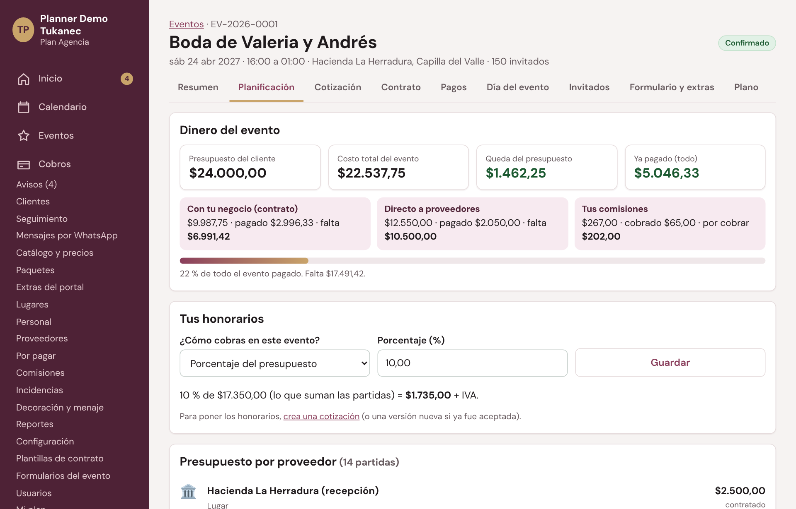
El dinero de la boda: presupuesto, costo, lo que queda, lo pagado y tus honorarios.
Solo para el dueño y los vendedoresEl coordinador ve la lista de tareas pero no el presupuesto ni el dinero.
9 Honorarios y comisiones
Honorarios: módulo «Presupuesto por proveedor» · Comisiones: módulo «Comisiones de proveedores»
Tus honorarios
En la Planificación, en Tus honorarios, eliges ¿Cómo cobras en este evento?:
Tarifa fija: escribes tu valor. También puedes cargarlo como producto de «Organización» de tu catálogo.
Porcentaje del presupuesto: escribes el porcentaje y toca Guardar. TuPlanner calcula: «10 % de lo que suman las partidas = tus honorarios + IVA».
Primero crea la cotización del evento (capítulo 11).
En Honorarios ($, sin IVA) revisa el valor y elige En la cotización.
Toca Poner en la cotización. Si ya tenía una línea de honorarios, se reemplaza por la nueva.
Cotización aceptadaUna cotización aceptada ya no se cambia. Para poner otros honorarios, crea una versión nueva de la cotización.
Comisiones de los proveedores
Muchos proveedores te pagan una comisión por llevarles clientes. En cada partida escribes Tu comisión (%) o una comisión fija ($); solo cuenta cuando la partida está Contratada. Cuando el proveedor te paga, en la partida escribe Te pagó ($) y toca Anotar comisión cobrada (si fue un error, Borrar lo cobrado).
En Más → Comisiones ves todo lo que te deben, por proveedor y por evento:
Por cobrar: cada proveedor con su total, Recordarle por WhatsApp (con el mensaje listo) y Ya me pagó en cada evento.
Cobradas: lo que ya te pagaron, por periodo (este mes, mes pasado, este año u otras fechas).
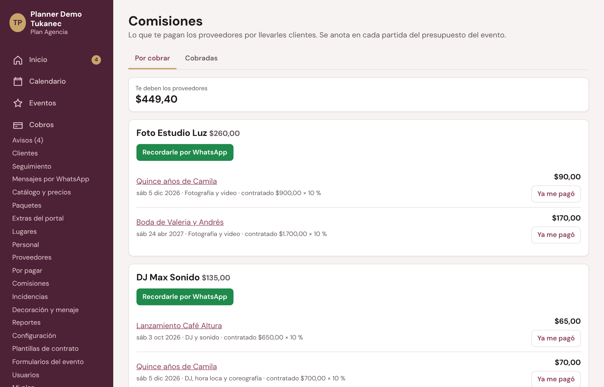
Comisiones por cobrar: lo que te deben Foto Estudio Luz y DJ Max Sonido.
10 Ideas e inspiración
Módulo «Ideas e inspiración»
La pestaña Ideas de cada evento es un tablero para ponerse de acuerdo con el cliente en cómo se verá el evento.
En Temática y colores toca Cambiar temática y colores: escribe la temática (ej. «Jardín romántico al atardecer») y toca cada cuadro para elegir los colores de la paleta (deja en blanco los que no uses). Toca Guardar.
En el Tablero de ideas sube Fotos (hasta 12 a la vez) de decoración, flores, vestido, pastel… con su Categoría y una Nota. Toca Subir.
En cada foto marca ❤️ Va, ✕ No va o Sin decidir. En Nota o borrar le cambias la nota o la quitas.
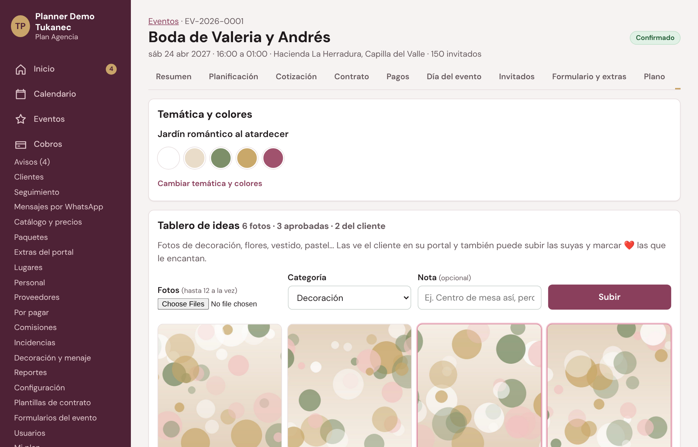
Tablero de ideas de la boda: la temática, la paleta y las fotos del organizador y de la novia.
El cliente también subeTu cliente ve el tablero en su portal (Ideas para tu evento), sube sus propias fotos y marca ❤️ Me encanta o ✕ No va. Tú ves cuántas son del cliente y cuántas están aprobadas.
11 Cotización y contrato
Cotización: base · Contrato con firma: módulo «Contratos con firma»
Armar la cotización
En la pestaña Cotización del evento elige cómo empezar: Desde un paquete (con el módulo Paquetes), Copiar la versión anterior o En blanco.
En Qué incluye agrega productos del catálogo (Agregar) o un paquete completo, y cambia cantidad, precio y si lleva IVA. Lo que es «por persona» se recalcula solo con los invitados.
Pon un Descuento si hay, las Notas para el cliente y las Condiciones.
Toca Guardar y enviar por WhatsApp (o Guardar y marcar como enviada). El evento pasa a Cotizado.
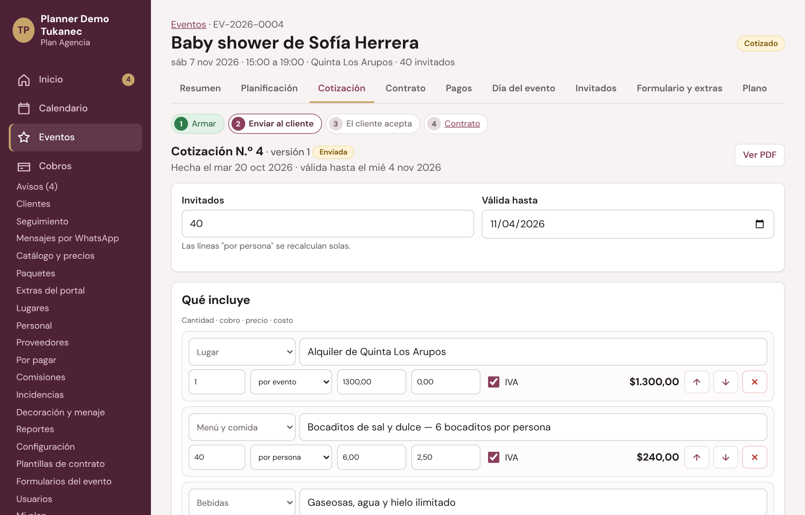
La cotización del baby shower: armar, enviar, el cliente acepta y contrato.
Ver PDF: la cotización con tu logo y un código QR. Comparar versiones: si el cliente pidió cambios.
Si el cliente aceptó por teléfono o en persona: Aceptar en nombre del cliente. Si no la aceptó: Marcar como rechazada con el motivo.
Si pidió cambios: Nueva versión. La anterior queda reemplazada y su enlace se lo avisa.
Lo que ve tu cliente
Tu cliente abre el enlace en su celular y ve su evento, el Total con IVA, el valor por persona, lo que incluye, las notas y las condiciones. Puede Descargar en PDF, escribirte con Tengo dudas · WhatsApp o, al final, escribir su nombre y tocar Aceptar cotización.
Al aceptar, el valor pasa al evento y se arma solo el plan de pagos (reserva, cuotas y saldo, según tus reglas).
OjoLa cotización vale hasta la fecha que dice. Vencida, el cliente ya no puede aceptarla y te pide una actualizada.
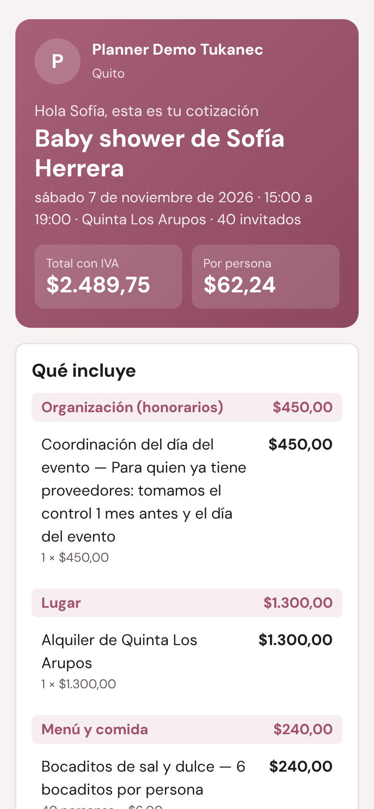
La cotización en el celular del cliente.
El contrato con firma en el celular
Con el módulo Contratos con firma, la pestaña Contrato te guía en 4 pasos: el cliente acepta la cotización → generas el contrato con tu Plantilla (se llena con los datos del cliente y del evento) → lo revisas y lo envías → el cliente lo firma en su celular.
Genera el contrato, revisa el texto y toca Guardar cambios si corriges algo.
Envíalo por WhatsApp (o déjalo listo para firmar). Desde ese momento el texto queda fijo.
El cliente lo lee, escribe su nombre y su cédula o RUC, firma con el dedo, marca «Leí y acepto el contrato» y toca Firmar contrato.
Al firmar, te llega un aviso y, si el evento estaba separado, pasa solo a Confirmado. El contrato firmado guarda la firma, la fecha, la cédula, la IP y una huella, con un código QR de verificación: Ver la página de verificación muestra si alguien cambió el texto.
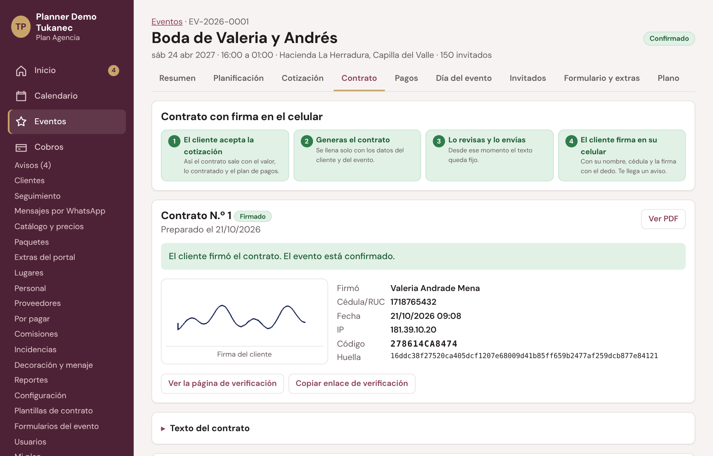
Contrato firmado por la novia, con su firma y el código de verificación.
Tus plantillas están en Más → Plantillas de contrato, con variables (nombre del cliente, fecha, valor…).
Si cambió algo importante (fecha, valor) o hubo un error: Anular contrato con el motivo, y haces uno nuevo. El enlace de firma anterior deja de funcionar.
Con el módulo Formulario, extras y encuesta, los extras que el cliente pide después de firmar se firman como anexo de contrato.
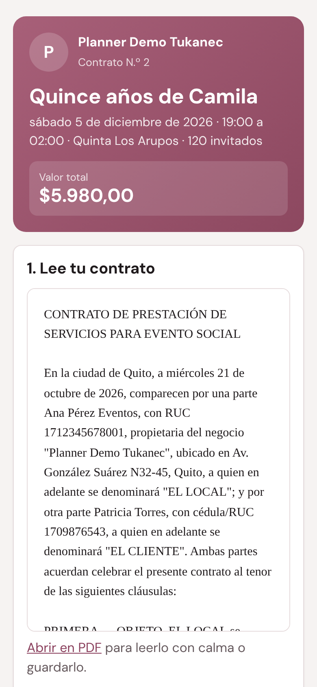
El cliente lee su contrato antes de firmar.
12 Pagos y cobros
Base · el pago con tarjeta es del módulo «Cobros en línea (Payphone)»
Los pagos de un evento
En la pestaña Pagos del evento ves el valor, lo pagado, lo que falta, lo vencido y los comprobantes por revisar, con los botones Registrar un pago, Recordar el pago por WhatsApp, Estado de cuenta (PDF) y el enlace del portal.
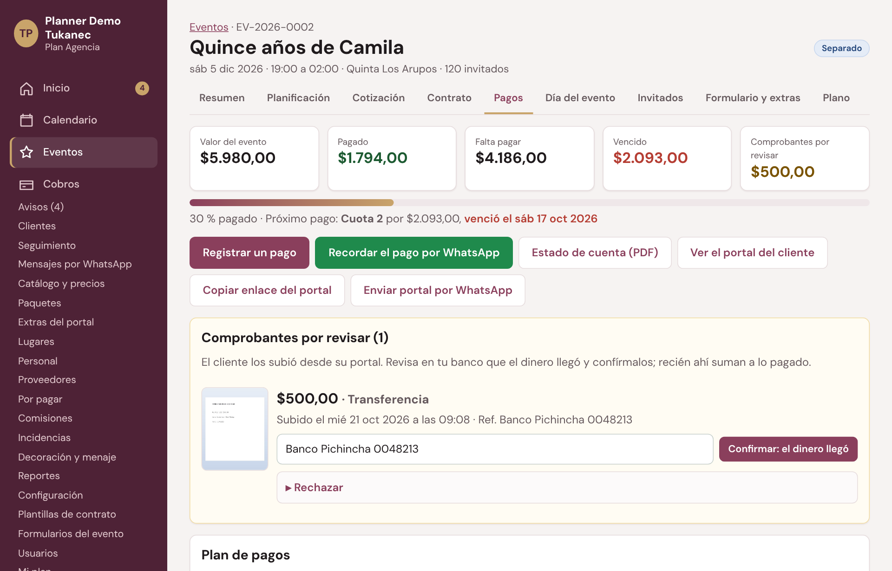
Pagos de los quince años: una cuota vencida y un comprobante que subió el cliente.
Plan de pagos: se arma solo al aceptar la cotización. Puedes Armar el plan automático otra vez (número de pagos y reserva) o Cambiar el plan a mano (+ Agregar otro pago, Guardar plan).
Registrar un pago recibido: valor, forma de pago, fecha, referencia y foto del comprobante (opcional). Toca Guardar pago y generar recibo: sale el recibo en PDF. Si era la reserva, la fecha queda separada sola.
Comprobantes por revisar: lo que subió tu cliente desde su portal. Revisa en tu banco y toca Confirmar: el dinero llegó, o Rechazar comprobante con el motivo.
Anular pago: si fue un error (se resta de lo pagado y no se puede deshacer).
Garantía por daños: registrar la garantía recibida, devolverla o retener por daños.
Gastos del evento y Ganancia del evento: lo que calculaste frente a lo que gastaste de verdad. Con el módulo Proveedores y compras, también las Compras a proveedores.
Cobros: todo lo que te deben
En Cobros (menú principal) ves lo cobrado este mes y el anterior, el total por cobrar, lo vencido, los Comprobantes por revisar (con Confirmar o Revisar), las Cuotas vencidas, lo que está Por vencer (7, 15 o 30 días) y las Garantías por devolver. En cada cuota tienes WhatsApp (recordatorio listo), Ver evento y Registrar pago.
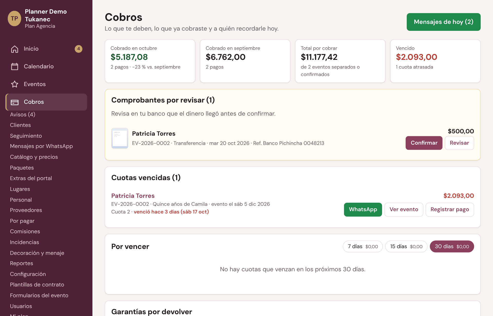
Cobros: un comprobante por confirmar y una cuota vencida.
Tus clientes pagan desde su portalCon el portal del cliente, tus datos de transferencia y DeUna salen en su enlace, y el cliente sube la foto de su comprobante. Con Cobros en línea (Payphone) también paga con tarjeta y el pago se registra solo.
13 El portal del cliente
Módulo «Portal del cliente» · sus tarjetas dependen de tus módulos
Tu cliente tiene su propio enlace, sin claves. Lo copias o lo envías desde el Resumen o los Pagos del evento (Copiar enlace del portal, Enviar portal por WhatsApp). Ahí ve:
Tu evento: fecha, lugar con su dirección y mapa, y cuánto falta.
Tus documentos: la cotización, el contrato (Firmar contrato o su PDF).
Tus pagos: plan de pagos, historial y Pagar (subir comprobante de transferencia o DeUna, o tarjeta con Payphone).
Tu planificación (módulo Planificación) e Ideas para tu evento (módulo Ideas).
Con otros módulos: formulario del evento, extras, invitados, cronograma, transmisión en vivo y la encuesta.
¿Tienes alguna duda?: escribirte por WhatsApp o llamarte.
El portal de Valeria: su boda y la cuenta regresiva.
Tu planificación (para el cliente)
Próximas reuniones que agendaste en el seguimiento.
Tus tareas: las del cliente, que marca tocando el cuadro. También ve cuántas tareas tuyas están listas.
Tu presupuesto (módulo Presupuesto): cada proveedor, cuánto cuesta y qué falta pagar. En las partidas que paga directo, abre Mis pagos a este proveedor y toca Anotar mi pago.
Lo que el cliente no veLas partidas ocultas, tus comisiones ni el costo de lo que revendes «en tu contrato».
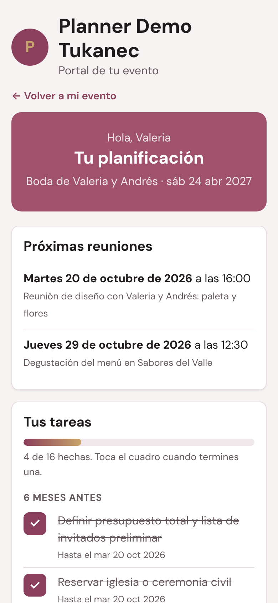
«Tu planificación» en el portal.
14 Seguimiento, mensajes y avisos
Base
Seguimiento
En Más → Seguimiento ves a quién llamar, escribir o recibir: los Pendientes (atrasados, para hoy y próximos) con Hecho, WhatsApp, Llamar y Reagendar; las Visitas y degustaciones de la semana; las Consultas sin atender; las Cotizaciones sin respuesta (Preguntar) y las Fechas retenidas que vencen (Recordar). Puedes ver Todo el equipo o Solo lo mío.
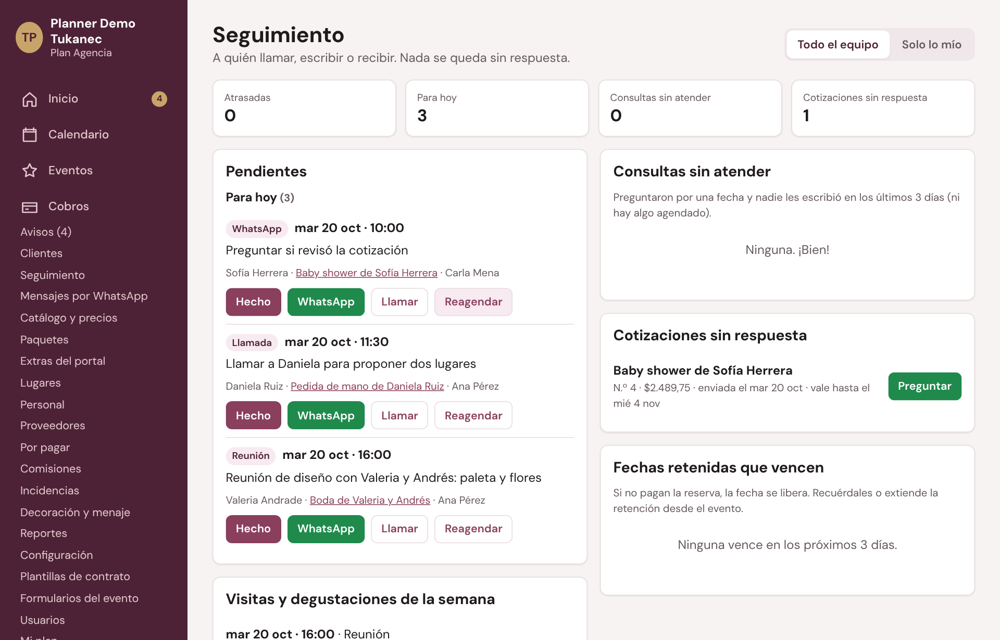
Seguimiento: el WhatsApp, la llamada y la reunión de hoy.
Para agendar una llamada, visita, degustación o reunión, ve al Resumen del evento (o a la ficha del cliente) → Seguimiento: elige Qué fue, la fecha en Agendar para (vacío = ya se hizo) y una nota, y toca Guardar.
Mensajes por WhatsApp de hoy
En Más → Mensajes por WhatsApp (o Mensajes de hoy en Cobros) TuPlanner te deja listos los mensajes del día: cuotas que vencen o ya vencieron, contratos que falta firmar, cotizaciones sin respuesta, pedir la lista de invitados, agradecer y pedir una reseña, y los de tus módulos. Toca Enviar por WhatsApp, revisa el texto en WhatsApp y mándalo; luego ✓ Marcar como enviado.
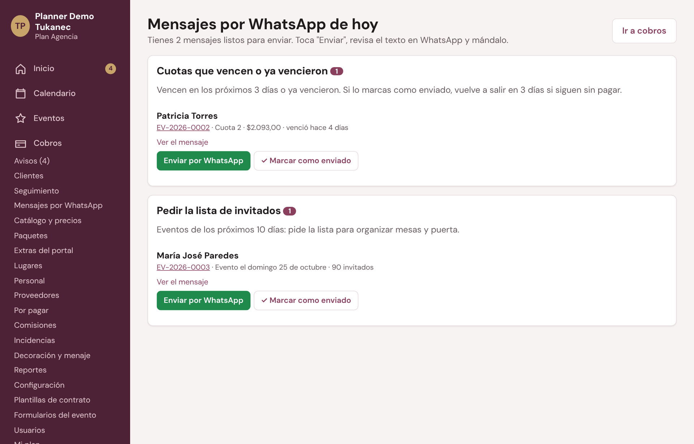
Mensajes de hoy: el recordatorio de la cuota y pedir la lista de invitados.
AvisosLa campana (Avisos) te cuenta lo que pasó: consultas nuevas desde tu página, comprobantes subidos, cotizaciones aceptadas y contratos firmados. Con el módulo Avisos por Telegram te llegan al celular: conéctalo en Mi cuenta → Conectar mi Telegram.
15 El día del evento y los demás módulos
Módulos «Día del evento», «Invitados con QR», «Plano del salón», «Mobiliario y menaje», «Proveedores y compras» y otros
Día del evento
La pestaña Día del evento tiene el Cronograma minuto a minuto (Cargar cronograma de ejemplo, Agregar al cronograma, Ordenar por hora, PDF), el Modo en vivo para el coordinador, el DJ y el fotógrafo (Abrir modo en vivo, WhatsApp al DJ, Al fotógrafo, Al coordinador), el Personal del evento, los Proveedores con su hora de llegada, las incidencias, el mobiliario, el montaje y el menú, y la Hoja del evento (PDF) para todo el equipo.
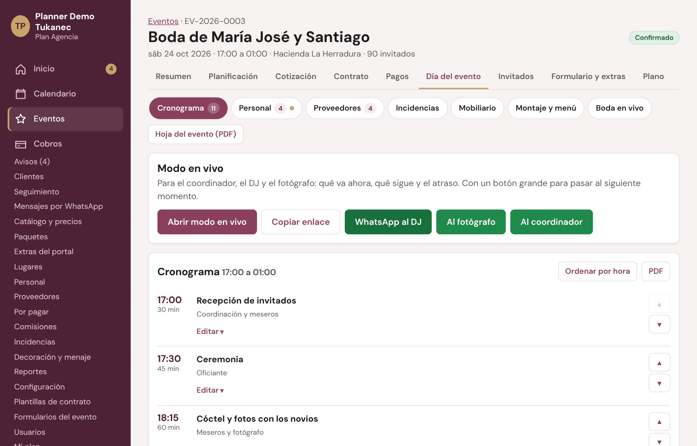
El día del evento de la boda de este sábado: modo en vivo y cronograma.
Módulo
Dónde está y qué hace
Invitados con QR
Pestaña Invitados: agregar o Pegar lista, invitación por WhatsApp, confirmación, mesas y control de ingreso con QR en la puerta.
Plano del salón
Pestaña Plano y Más → Planos del salón: distribución de mesas de cada lugar, unida a las mesas de los invitados, en PDF.
Mobiliario y menaje
Más → Decoración y menaje: lo tuyo que llevas a los eventos (bases, velas, mantelería), cuánto se reserva y los daños.
Proveedores y compras
Más → Proveedores y Por pagar: ficha del proveedor, documentos que vencen, órdenes de compra, facturas (también el XML del SRI) y pagos.
Portal del proveedor · Incidencias
El proveedor ve sus eventos y confirma órdenes · problemas con foto, puntualidad y puntaje (Más → Incidencias).
Formulario, extras y encuesta
Pestaña Formulario y extras, Más → Formularios del evento y Extras del portal: el cliente llena su formulario, pide extras en línea y responde la encuesta.
Boda en vivo · Metas · Exportar
Transmisión con «Ver en vivo» · Más → Metas de ventas · descargas para Excel y Google Calendar.
16 Reportes
Base · lo avanzado es del módulo «Metas y reportes avanzados»; las descargas, de «Exportar»
En Más → Reportes eliges el periodo (Este mes, Mes pasado, Este año u Otras fechas) y ves:
Ventas (un evento cuenta como vendido el día que se separó o se confirmó), Cobrado por mes con cómo te pagaron, Por cobrar y la Ocupación de los próximos 12 meses (sábados vendidos y por lugar).
Con Metas y reportes avanzados: el Embudo de ventas y conversión (por cómo llegaron, por tipo de evento, por vendedor y por qué se pierden), la Ganancia por evento y la Comisión de vendedores.
Con Formulario, extras y encuesta: la satisfacción de tus clientes. Con Exportar: Descargar para Excel.
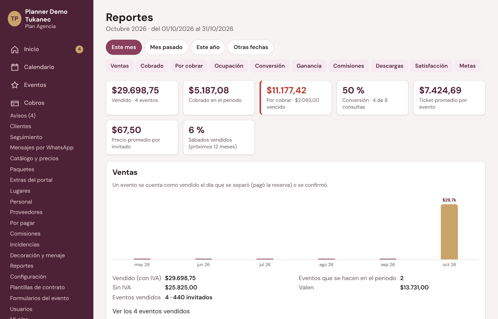
Reportes de octubre: vendido, cobrado, por cobrar, conversión y ticket promedio.
ConsejoEl usuario Solo consulta ve los reportes sin poder cambiar nada: es ideal para tu contador.
17 Mi plan y las demos
Para el dueño
En Más → Mi plan ves tu plan, tus módulos Encendidos, los que puedes agregar y lo que viene Siempre incluido. Los módulos que no tienes dicen «Precio por cotización»: toca Pedir cotización y el pedido le llega a Tukán, que te escribe con el valor y para activarlo. En cada plan que no es el tuyo también está Pedir cotización. Para cualquier duda de tu plan, Preguntar por WhatsApp.
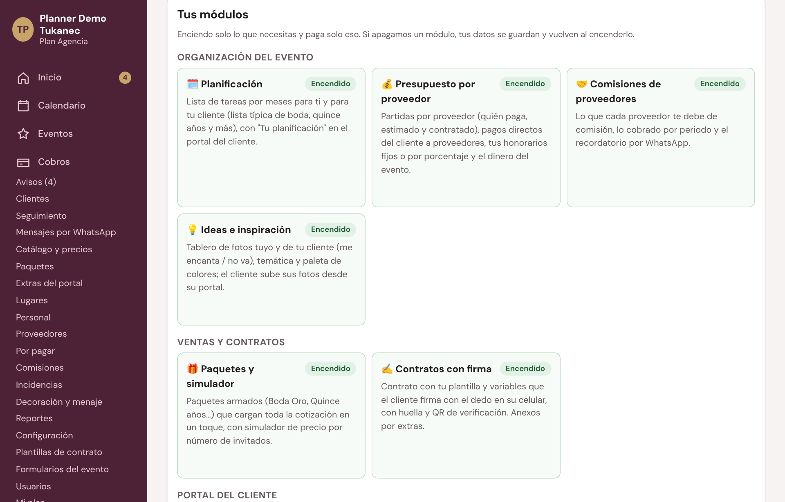
Mi plan: los módulos de la organización del evento y de ventas, encendidos.
Si alguien de tu equipo abre una pantalla de un módulo que no tienes, ve «🔒 Este módulo no está en tu plan» con lo que hace y los botones Pedir cotización y Ver Mi plan (al que no es dueño, le pide hablar con el dueño). Si ya lo usaste antes, tus datos siguen guardados.
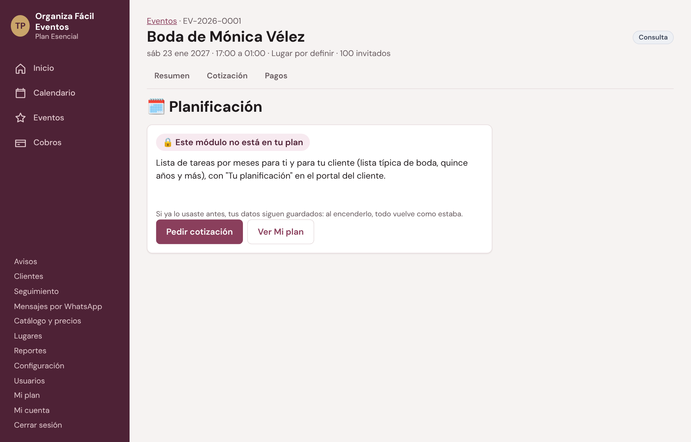
Un negocio en plan Esencial abre la Planificación de un evento.
Pedir una demo
TuPlanner no tiene registro abierto: todo empieza con una demo. Quien quiere conocerlo llena Solicitar demo (nombre del negocio, su nombre, ciudad, WhatsApp, correo, qué necesita y los módulos que le interesan) y toca Solicitar demo.
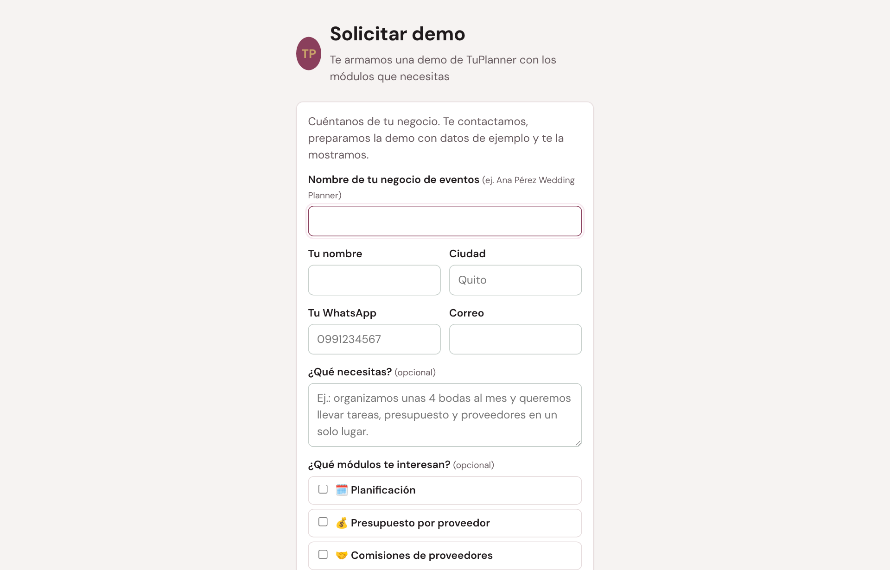
Solicitar demo.
Tukán prepara tu demo y te manda por WhatsApp tu correo y tu contraseña. La demo trae los módulos encendidos para que veas todo.
Mientras dura, arriba dice «Demo: te quedan X días» y el enlace Ver Mi plan.
Al contratar te quedas con los módulos de tu plan y los que agregues: nada de lo que cargaste se pierde.
¿Quieres una demo o una cotización para tu negocio? Escríbenos: WhatsApp 099 640 8397 · info@tukansoftware.com · tukansoftware.com
18 Preguntas frecuentes
Olvidé mi contraseña. ¿Qué hago?
Pídele al dueño que entre a Usuarios y toque Nueva contraseña: te llega una temporal por WhatsApp. Si eres el dueño, escríbele a Tukán por WhatsApp. Para cambiar la tuya: Mi cuenta → Cambiar mi contraseña.
¿Puedo crear un evento sin saber todavía el lugar?
Sí. En Nuevo evento deja los lugares sin marcar: queda «Lugar por definir». Lo eliges después con Editar en el Resumen.
¿Por qué no puedo separar una fecha?
Porque ese lugar ya está separado a esa hora por otro evento: TuPlanner no deja reservar dos veces el mismo lugar. Cambia la fecha, la hora o el lugar, o guárdalo como consulta en lista de espera.
¿Cuándo pasa un evento a «Separado» y a «Confirmado»?
A Separado, cuando registras (o confirmas) el pago de la reserva. A Confirmado, cuando el cliente firma el contrato. También puedes cambiar el estado a mano en el Resumen.
¿El cliente ve lo que gano?
No. En su portal no ve tus comisiones, las partidas ocultas ni el costo de lo que revendes en tu contrato. Ve sus pagos y lo que le falta pagar.
¿Mis honorarios se calculan solos?
Si cobras por porcentaje del presupuesto, TuPlanner calcula el valor sobre lo que suman las partidas; tú decides cuándo ponerlo en la cotización con Poner en la cotización.
¿Puedo cambiar una cotización que el cliente ya aceptó?
No se cambia: crea una Nueva versión. Si el contrato ya está firmado, los extras se firman como anexo.
Mi coordinador no ve los pagos. ¿Es un error?
No: el rol Coordinador no ve dinero. Si necesita verlo, cámbiale el rol en Usuarios.
No veo un menú o una pestaña que sale en este manual.
Puede ser de un módulo que no tienes encendido o de un rol distinto al tuyo. Revisa Mi plan o pregúntale al dueño.
¿Si apagan un módulo pierdo mis datos?
No. Se esconden sus pantallas, pero todo queda guardado y vuelve al encenderlo.
¿Cuánto cuesta TuPlanner?
Depende de los módulos que necesites. Escríbenos y te enviamos una cotización para tu negocio.